3.5. Tutorial 5: Simulating an EBIC/CL experiment¶
In this tutorial we build a 2-dimensional simulation to describe experiments with a localized carrier generation profile, such as electron beam induced current (EBIC), or cathodoluminescence (CL).
See also
The example treated here is in the file 2d_EBIC.py located in the examples\tutorial5 directory of the distribution. The same simulation’s GUI input file is 2d_EBIC.ini, also located in the examples\tutorial5 directory.
For this case we’ll need to define a system as before, and then define a custom carrier generation rate density profile associated with electron beam excitation. We’ll then cycle over beam positions and compute the total current and total radiative recombination as a function of beam position.
3.5.1. Building the system¶
The system we want to build is a 2-dimensional p-n junction in which the “top” of the system represents the exposed sample surface. Building the 2-d pn junction proceeds as in the previous tutorials, and the code is shown below:
## dimensions of the system
Lx = 3e-4 #[cm]
Ly = 3e-4 #[cm]
# extent of the junction from the left contact [cm]
junction = .1e-4 # [cm]
# Mesh
x = np.concatenate((np.linspace(0,.2e-4, 30, endpoint=False),
np.linspace(0.2e-4, 1.4e-4, 60, endpoint=False),
np.linspace(1.4e-4, 2.7e-4, 60, endpoint=False),
np.linspace(2.7e-4, Lx, 10)))
y = np.concatenate((np.linspace(0, .25e-4, 50, endpoint=False),
np.linspace(.25e-4, 1.25e-4, 50, endpoint=False),
np.linspace(1.25e-4, Ly, 50)))
# Create a system
sys = sesame.Builder(x, y)
# Dictionary with the material parameters
mat = {'Nc':8e17, 'Nv':1.8e19, 'Eg':1.5, 'epsilon':9.4, 'Et': 0,
'mu_e':320, 'mu_h':40, 'tau_e':10*1e-9, 'tau_h':10*1e-9}
# Add the material to the system
sys.add_material(mat)
# define a function specifiying the n-type region
def n_region(pos):
x, y = pos
return x < junction
# define a function specifiying the p-type region
def p_region(pos):
x, y = pos
return x >= junction
# Add the donors
nD = 1e17 # [cm^-3]
sys.add_donor(nD, n_region)
# Add the acceptors
nA = 1e15 # [m^-3]
sys.add_acceptor(nA, p_region)
# Use Ohmic contacts
sys.contact_type('Ohmic','Ohmic')
Sn_left, Sp_left, Sn_right, Sp_right = 1e7, 1e7, 1e7, 1e7
sys.contact_S(Sn_left, Sp_left, Sn_right, Sp_right)
3.5.2. Adding surface recombination¶
Adding recombination at the sample surface is accomplished with a planar defect along the line 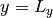. We consider a neutral surface, so that the charge state of the defect is always 0. This is implemented by setting transition=(0,0) as an input argument to add_line_defects(). As described in the previous tutorial, the values given in transition set the charge of the defect when its occupied or unoccupied:
p1 = (0, Ly)
p2 = (Lx, Ly)
E = 0 # energy of gap state (eV) from intrinsic level
rhoGB = 1e14 # density of defect states [cm^-2]
s = 1e-14 # defect capture cross section [cm^2]
sys.add_line_defects([p1, p2], rhoGB, s, E=E, transition=(0,0))
3.5.3. Electron beam excitation¶
Next we review the physics of the electron beam excitation. For a beam focused at 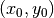, a simple parameterization of the generation rate density profile is given by a Gaussian:
(1)¶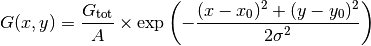
For our geometry, 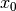 is the lateral beam position, while the depth of the excitation from the sample surface is 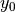. The total generation rate (units 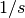) is approximated by [4]:
(2)¶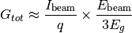
The length scale of the excitation is determined by the electron beam energy and material mass density, and is written in terms of the interaction distance 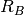:
(3)¶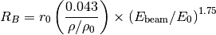
The constants in Eq. (3) are 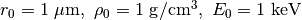. The length scale of the Guassian and the distance from the surface are related to as [5]:
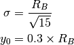
The normalization constant  has units of volume. The standard normalization of a 2-dimensional Gaussian is 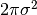, which has units of area. An appropriate choice for the additional length factor in is the electron diffusion length 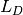, so that:
has units of volume. The standard normalization of a 2-dimensional Gaussian is 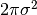, which has units of area. An appropriate choice for the additional length factor in is the electron diffusion length 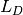, so that:
(4)¶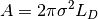
To code 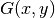, Eq. (1) we start by making the necessary definitions of constants:
q = 1.6e-19 # C
Ibeam = 10e-12 # A
Ebeam = 15e3 # eV
eg = 1.5 # eV
density = 5.85 # g/cm^3
kev = 1e3 # eV
Gtot = Ibeam/q * Ebeam / (3*eg)
Rbulb = 0.043 / density * (Ebeam/kev)**1.75 # given in micron
Rbulb = Rbulb * 1e-4 # converting to cm
sigma = Rbulb / sqrt(15) # Gaussian spread
y0 = 0.3 * Rbulb # penetration depth
Ld = np.sqrt(sys.mu_e[0] * sys.tau_e[0]) * sys.scaling.length # diffusion length
3.5.4. Perfoming the beam scan¶
To scan the lateral position of the beam, we first define the list of values:
x0list = np.linspace(.1e-4, 2.5e-4, 11)
We define an array to store the computed current at each beam position:
jset = np.zeros(len(x0list))
Next we scan over with a for loop. At each value of , we define a function as given in Eq. (1), and add this generation to the system:
for idx, x0 in enumerate(x0list):
def excitation(x,y):
return Gtot/(2*np.pi*sigma**2*Ld) *
np.exp(-(x-x0)**2/(2*sigma**2)) * np.exp(-(y-Ly+y0)**2/(2*sigma**2))
sys.generation(excitation)
Note
Using the GUI is more awkward for this type of simulation, because only one variable definition is allowed in the generation function definition. Therefore all of the numerical prefactors must be computed by the user and input by hand.
Now we solve the system:
solution = sesame.solve(sys, periodic_bcs=False)
Notice that we provided the optional input argument periodic_bcs=False to the solve() function. This ensures that the top and bottom boundary conditions are “hardwall”. The default boundary condition is periodic, such that 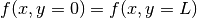 for all system properties.
We obtain the current and store it in the array:
# get analyzer object with which to compute the current
az = sesame.Analyzer(sys, solution)
# compute (dimensionless) current and convert to dimension-ful form
tj = az.full_current() * sys.scaling.current * sys.scaling.length
# save the current
jset[idx] = tj
It can be informative to plot the current normalized to the total generation rate. The (dimensionless) total generation rate for a simulation is contained in the gtot field of sys. As always, we must use scaling factors to make this a dimension-ful quantity. The code for this is shown below:
# obtain total generation from sys object
gtot = sys.gtot * sys.scaling.generation * sys.scaling.length**2
jratio[idx] = tj/(q * gtot)
We can also compute the radiative recombination at each beam position point, thereby simulation a cathodoluminesence experiment. This code shown below:
# compute (dimensionless) total radiative recombination and convert to to dimension-ful form
cl = az.integrated_radiative_recombination() * sys.scaling.generation * sys.scaling.length**2
# save the CL
rset[idx] = cl
rad_ratio[idx] = cl/gtot
The current and CL can be saved and plotted as in previous tutorials.
References
| [4] |
|
| [5] |
|